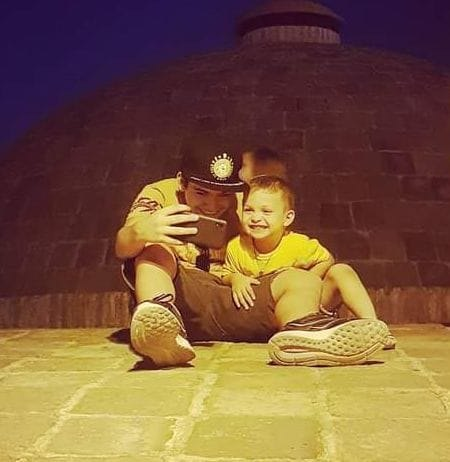

about myself
Hello! i am Ioane. i am begginer programmer im currently learning python and HTML,i like them both so far i am 14 years old and i want to be succesfull programmer one day.programming isnt only thing in my life i am also a Judoka ive been learning Judo for 5 years and its become part of my life now, i dont have much succes in Judo yet but i am training to get better so i can become a champ and prove that i can do it
heres an image of me and my little cousin
